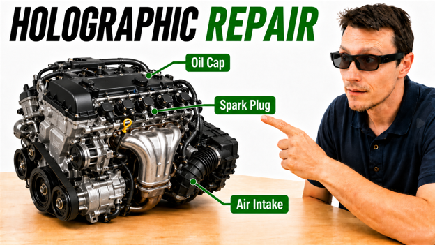
The ARVR Lab
At the School of Computer and Cyber Sciences, Augusta University, in collaboration with the Cybermedia Center at Osaka University.
Empowering education and training through augmented and virtual reality.
The ARVR Lab is a state-of-the-art laboratory within Augusta University's School of Computer and Cyber Sciences. As part of the Cyber-Physical Systems group, we build hardware and software that can improve how we interact with virtual content and strive to achieve a balance of theoretical and practical research. See our Lab Intro Video for more details.
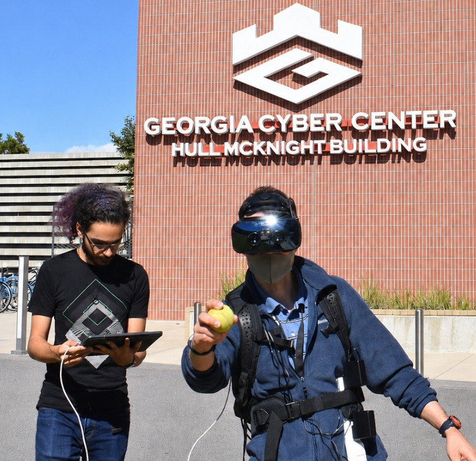
Lab Experiences
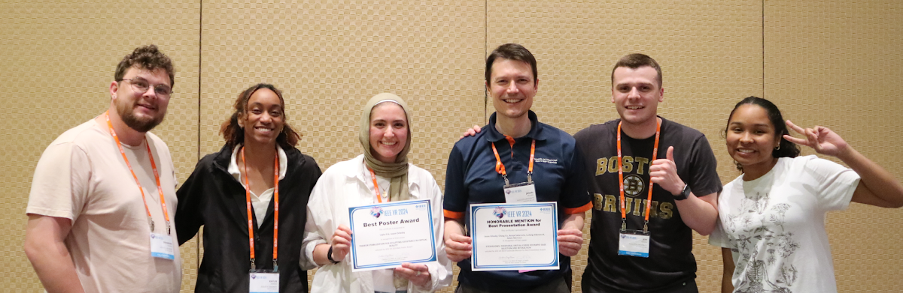
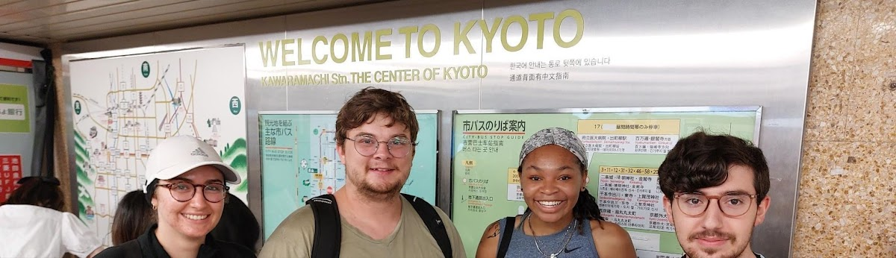
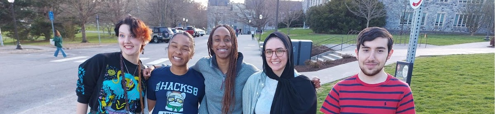
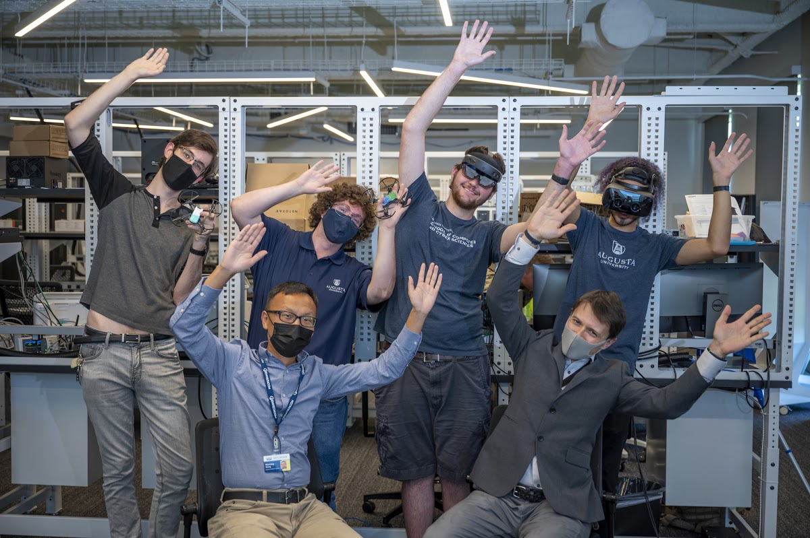
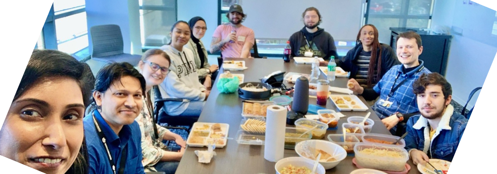
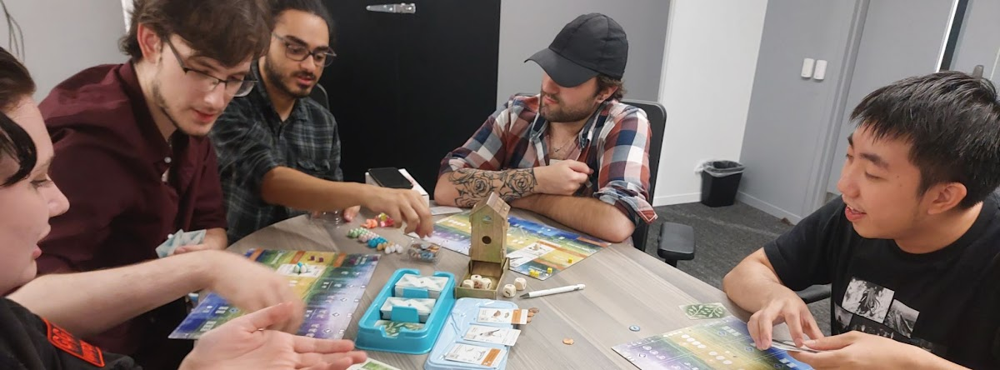
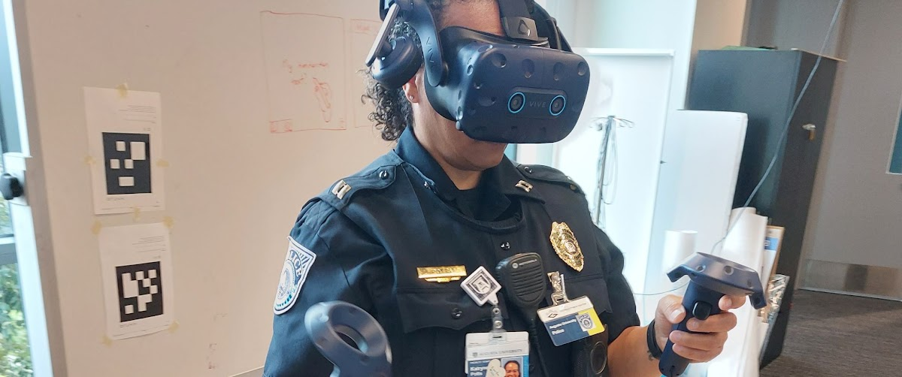
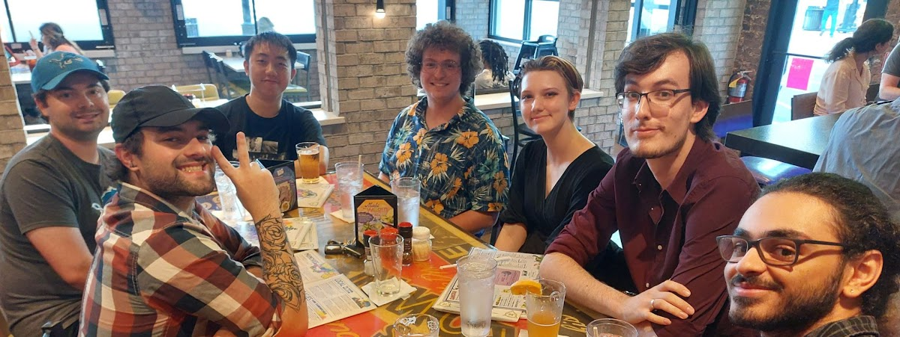
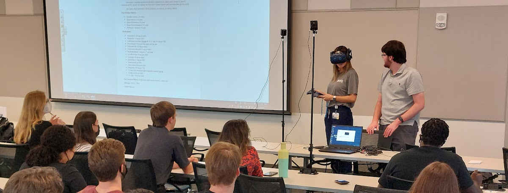
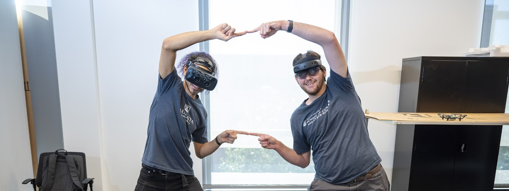
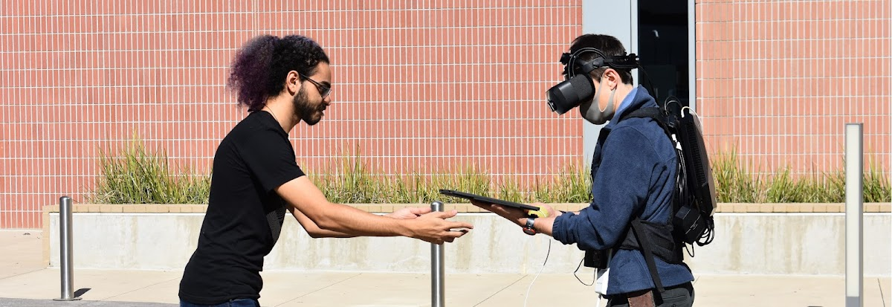
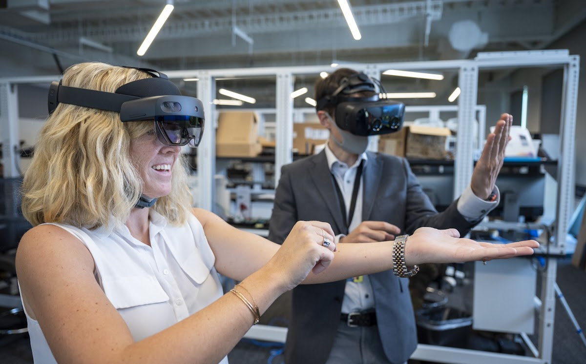
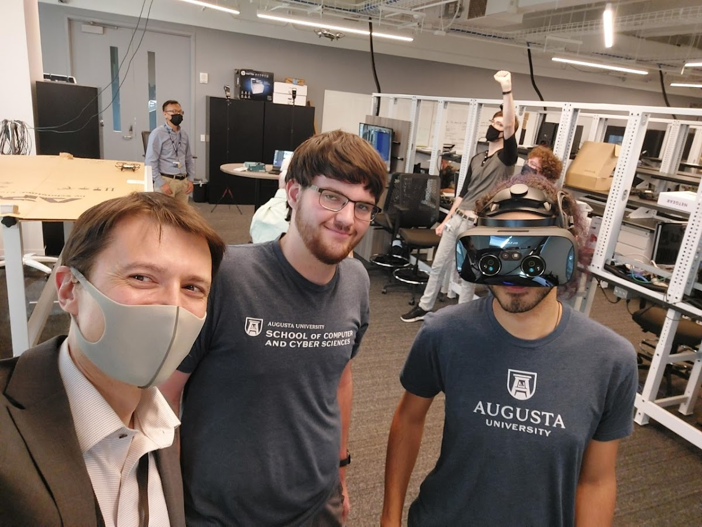
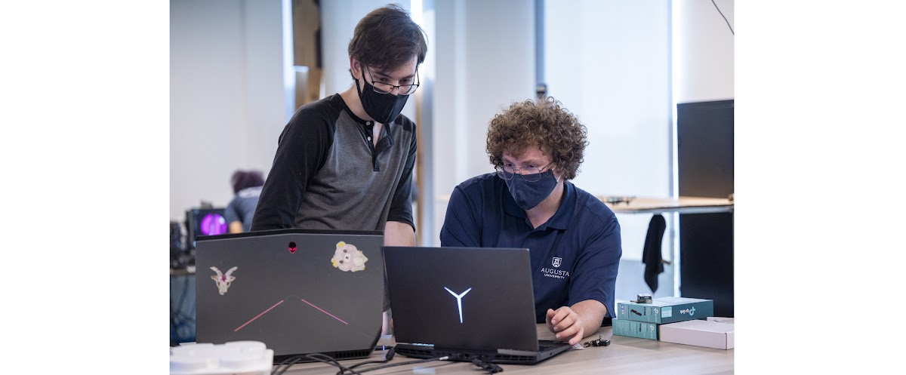
Lab experiences include IEEEVR, study abroad in Japan, conference presentations, international potlucks, gaming, industry partnerships, social events, inter-department collaboration, outdoor augmented reality, interactive technology, lab demonstrations, and collaborative research.
Recent Research
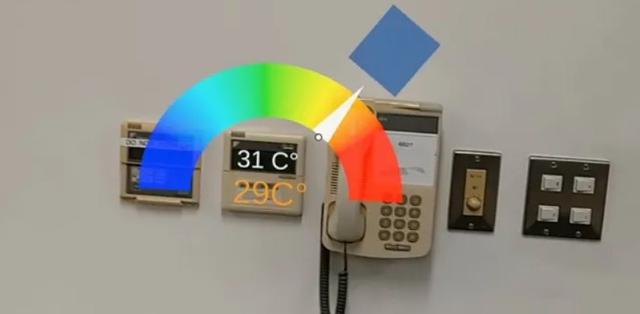
Fast Gaze Selection and Interaction
Orlosky, J., Liu., C, Sakamoto, K., Sidenmark, L., & Mansour, A. (2024). EyeShadows: Peripheral Virtual Copies for Rapid Gaze Selection and Interaction. To appear in the Proceedings of the IEEE conference on Virtual Reality. [Best Presentation Honorable Mention]
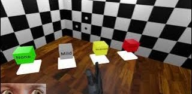
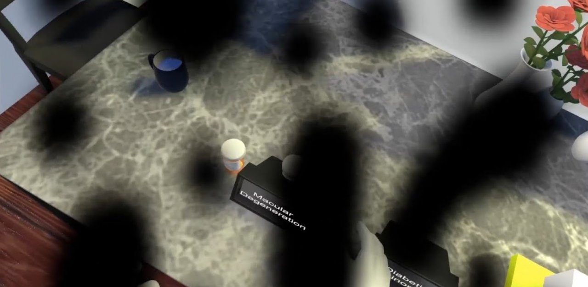
Simulation of Visual Deficits in Virtual Reality
Alexander, D., Nguyen, T., Keller, P., Orlosky, J., Brown, S., Wood, E., ... & Jirau-Rosaly, W. (2020, March). Design of visual deficit simulation for integration into a geriatric physical diagnosis course. In 2020 IEEE Conference on Virtual Reality and 3D User Interfaces Abstracts and Workshops (VRW) (pp. 838-839). IEEE.
Getting your MS or PhD in Computer Science
The AR-VR Lab is looking for highly motivated individuals with a passion for solving challenging research problems.
Funding
At the current time, I am only accepting self-funded graduate students, though additional external funding may become available later. For American citizens, I strongly recommend applying for the NSF Graduate Research Fellowship Program. Submitting to the GRFP is required, if you are eligible, to be considered for lab funding.
Application
Individuals who would like to apply to the lab as part of their
SCCS Masters or PhD program
application should submit the following additional documents by e-mail
to jorlosky {at} augusta.edu.
- Resume or Curriculum Vitae, 2 pages maximum.
- A 2-3 page research plan in double-column format, including your motivations for becoming an MS or PhD student, the technical content, and a schedule or plan for conducting the research work.
- Copies of any undergraduate or graduate transcripts. Official copies may be requested later.
We are also looking for research assistant volunteers, who may be invited to apply directly for the MS or PhD program based on their performance. Assistantships range from one semester to one year, and applicants should follow the same process outlined above.
Required Qualifications
- A technical background in computer science, computer or electrical engineering, or a similar discipline.
- Familiarity with AI tools, including prompt engineering, agentic workflows, and/or human-in-the-loop development
- Clearly defined research goals.
- The ability to work well with other teams of students, researchers, and AI agents.
- A command of written and spoken English.
Recommended Qualifications
- Experience in one or more of the following areas: cognitive science, human-computer interaction, artificial intelligence, or computer graphics.
- Proficiency in one or more of the following programming languages: C++, Java, Python, or C#.
- Knowledge of one or more of the following tools or areas: Unity 3D, ARToolKit, virtual reality, augmented reality, OpenGL, or OpenCV.
Keywords: Augmented Reality; Virtual Reality; Eye Tracking; Artificial Intelligence; Interaction; Remote Collaboration